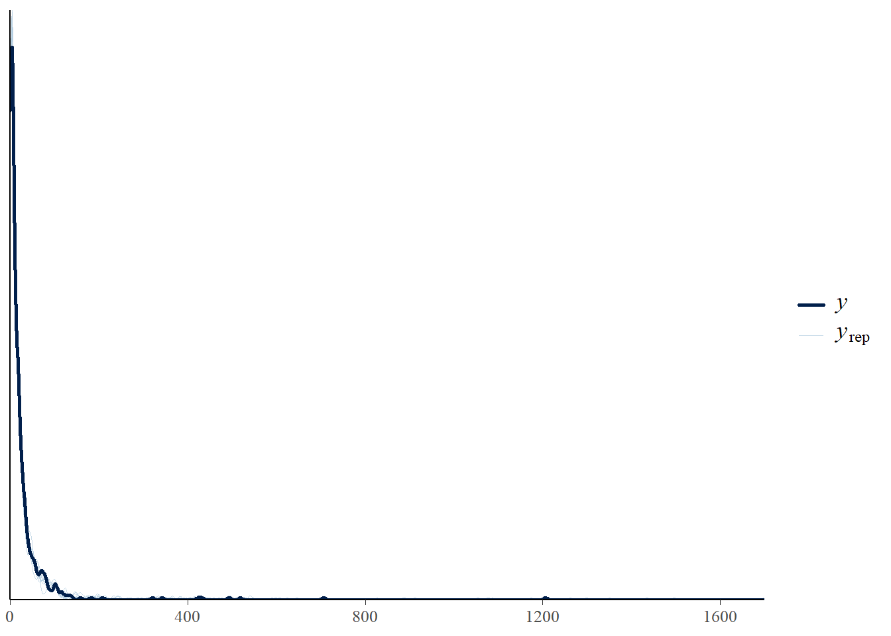
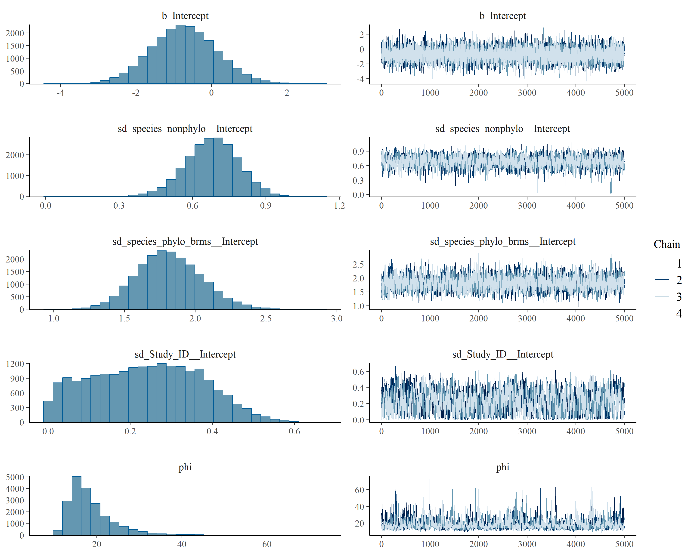

Code
library(tidyverse)
library(brms)
library(posterior)
library(bayesplot)
library(loo)
options(mc.cores = parallel::detectCores())This section presents the intercept-only beta-binomial phylogenetic model used to estimate the population-level intercept and quantify heterogeneity in mixed-paternity prevalence across birds. The model accounts for study identifier, non-phylogenetic species-level variation, and phylogenetically structured species-level variation.
The R packages required for model fitting and diagnostics.
library(tidyverse)
library(brms)
library(posterior)
library(bayesplot)
library(loo)
options(mc.cores = parallel::detectCores())data_overall_study <- readRDS("data/data_overall_study.rds")
phylo_mat <- readRDS("data/phylo_mat.rds")| Observations | Study identifiers | Species | Total broods | Mixed-paternity broods | Raw prevalence (%) |
|---|---|---|---|---|---|
| 619 | 554 | 375 | 46249 | 16089 | 34.79 |
Because brood-level paternity data are expected to exhibit substantial extra-binomial heterogeneity across references, populations, and species, we modelled mixed-paternity prevalence using beta-binomial generalised linear mixed-effects models with a logit link:
\[y_i \sim \mathrm{BetaBinomial}(n_i, \mu_i, \phi)\]
where \(y_i\) is the number of broods with mixed paternity, \(n_i\) is the total number of broods genotyped, \(\mu_i\) is the expected mixed-paternity prevalence, and the precision parameter \(\phi\) describes extra-binomial variation among study units.
For models with a population-level intercept, the linear predictor was:
\[\mathrm{logit}(\mu_i) = \alpha + \mathbf{X}_i \boldsymbol{\beta} + u_{\mathrm{reference}[i]} + u_{\mathrm{species}[i]} + u_{\mathrm{phylo}[i]}\]
where \(\alpha\) is the intercept, \(\mathbf{X}_i \boldsymbol{\beta}\) represents fixed biological and methodological moderators, and \(u_{\mathrm{reference}}\), \(u_{\mathrm{species}}\), and \(u_{\mathrm{phylo}}\) represent study-identifier-level, non-phylogenetic species-level, and phylogenetically structured random effects, respectively. Study identifier (Study_ID) is an analytical grouping variable, not a bibliographic-publication count; one study identifier can incorporate evidence reported across more than one source.
The single-moderator models for marker type, nest type, BG breeding system, BIRDBASE mating system, and parental care use 0 + category: each fitted category has its own logit coefficient, with no shared population-level intercept or reference category. Pairwise contrasts subtract category coefficients within each posterior draw. The primary multivariable model and binary single-moderator models instead use an intercept and reference-category contrasts. All models retain the three random-intercept terms.
Reference categories apply only to models with a population-level intercept. Primary = primary multivariable model; single = single-moderator model; both = both model types. The five models fitted with 0 + category have no reference category.
| Predictor | Model | Reference category | Other fitted categories |
|---|---|---|---|
| Marker type | Primary | DNA fingerprinting | Microsatellite; mixed/other; SNPs |
| BG breeding system | Primary | Cooperative breeder | Monogamy; no social bond; polyandry |
| Nest type | Primary | Cavity | Ground; open; other enclosed |
| Migration | Both | Regular migrant (Strong) | Resident, weak/local or irregular migrant (Weak) |
| Coloniality | Both | Non-colonial (0) | Colonial (1) |
| Nest-box use | Single | Natural nest (no) | Nest box (yes) |
| Cooperative breeding | Single | Non-cooperative (no) | Cooperative (yes) |
| Parameter class | Prior | Applicability |
|---|---|---|
| Population-level coefficients (b) | Flat (improper) | Slopes and reference-category contrasts, or all category logits in 0 + category models; absent from the overall and matched-sample intercept-only models. |
| Population-level intercept | Student-t(3, 0, 2.5) | Models with a shared population-level intercept only; absent from the five 0 + category models. |
| Group-level SDs | Half-Student-t(3, 0, 2.5), positive | All models; one SD for each of the three random-intercept terms. |
| Beta-binomial precision (phi) | Gamma(0.01, 0.01), positive | All models; shape–rate parameterisation. |
These priors were verified in the saved fits. The Intercept prior applies to the internally centred intercept used by brms, where applicable; it does not apply to category logits in 0 + category models. Flat priors are improper, so the complete specification should not be described collectively as weakly informative. Priors are on group-level SDs; posterior heterogeneity is reported as variance by squaring each SD draw. See the brms prior documentation.
The intercept-only model estimated the population-level intercept while quantifying study-identifier-level, non-phylogenetic species-level, and phylogenetically structured species-level variation. Its inverse-logit transformation is the expected prevalence when all random effects are set to zero; it is not a marginal average across the observed study identifiers or species.
model_overall_study <- brm(
n_mixed_broods | trials(n_total_broods) ~
1 +
(1 | Study_ID) +
(1 | species_nonphylo) +
(1 | gr(species_phylo_brms, cov = phylo_mat)),
family = beta_binomial(link = "logit"),
data = data_overall_study,
data2 = list(phylo_mat = phylo_mat),
chains = 4,
cores = 4,
iter = 10000,
warmup = 5000,
control = list(adapt_delta = 0.99, max_treedepth = 15),
seed = 123
)knitr::include_graphics(
"Figures/model_diagnostics/overall_prevalence_intercept_plot.png"
)
model_overall_study <- readRDS("models/model_overall_study.rds")
summary(model_overall_study) Family: beta_binomial
Links: mu = logit
Formula: n_mixed_broods | trials(n_total_broods) ~ 1 + (1 | Study_ID) + (1 | species_nonphylo) + (1 | gr(species_phylo_brms, cov = phylo_mat))
Data: data_overall_study (Number of observations: 619)
Draws: 4 chains, each with iter = 10000; warmup = 5000; thin = 1;
total post-warmup draws = 20000
Multilevel Hyperparameters:
~species_nonphylo (Number of levels: 375)
Estimate Est.Error l-95% CI u-95% CI Rhat Bulk_ESS Tail_ESS
sd(Intercept) 0.68 0.11 0.45 0.88 1.00 2213 3428
~species_phylo_brms (Number of levels: 375)
Estimate Est.Error l-95% CI u-95% CI Rhat Bulk_ESS Tail_ESS
sd(Intercept) 1.82 0.23 1.40 2.30 1.00 2604 3966
~Study_ID (Number of levels: 554)
Estimate Est.Error l-95% CI u-95% CI Rhat Bulk_ESS Tail_ESS
sd(Intercept) 0.24 0.13 0.01 0.48 1.00 785 1498
Regression Coefficients:
Estimate Est.Error l-95% CI u-95% CI Rhat Bulk_ESS Tail_ESS
Intercept -0.73 0.87 -2.43 1.00 1.00 11802 12348
Further Distributional Parameters:
Estimate Est.Error l-95% CI u-95% CI Rhat Bulk_ESS Tail_ESS
phi 18.57 5.57 12.07 32.96 1.00 931 1424
Draws were sampled using sampling(NUTS). For each parameter, Bulk_ESS
and Tail_ESS are effective sample size measures, and Rhat is the potential
scale reduction factor on split chains (at convergence, Rhat = 1).Model-based prevalence is summarised as the posterior mean on the probability scale, with 95% equal-tailed credible intervals. The inverse-logit transformation is applied to each posterior draw before averaging; all random effects are set to zero.
The posterior mean overall prevalence is 34.71% (95% equal-tailed CrI 8.12–73.16%).
| Parameter | Estimate | Lower 95% CrI | Upper 95% CrI |
|---|---|---|---|
| Intercept (logit scale) | -0.732 | -2.426 | 1.003 |
| Posterior mean prevalence at zero random effects (%) | 34.706 | 8.119 | 73.156 |
| Study-level variance | 0.074 | 0.00018 | 0.234 |
| Non-phylogenetic species-level variance | 0.472 | 0.203 | 0.783 |
| Phylogenetic species-level variance | 3.365 | 1.947 | 5.312 |
| Beta-binomial precision (phi) | 18.568 | 12.075 | 32.961 |
Group-level estimates are posterior mean logit-scale variances with equal-tailed 95% credible intervals. Raw brms diagnostic summaries retain their native SD parameterisation.
We quantified the phylogenetic signal in between-species variation as the proportion of species-level variance attributable to the phylogenetically structured random effect:
\[ \nu = \frac{\sigma^2_{\mathrm{phylo}}} {\sigma^2_{\mathrm{phylo}} + \sigma^2_{\mathrm{nonphylo}}} \]
where \(\sigma^2_{\mathrm{phylo}}\) is the variance of the phylogenetically structured species-level random effect and \(\sigma^2_{\mathrm{nonphylo}}\) is the variance of the non-phylogenetic species-level random effect.
The table below summarises the relative contribution of the phylogenetic and non-phylogenetic species-level variance components in the overall model.
| Statistic | Estimate | Lower 95% CrI | Upper 95% CrI |
|---|---|---|---|
| Phylogenetic signal (ν) | 0.87 | 0.74 | 0.96 |
pp_check(model_overall_study)Using 10 posterior draws for ppc type 'dens_overlay' by default.
| Value | n |
|---|---|
| Non-divergent | 20000 |
png
2 #| label: show-overall-traceplot
#| echo: false
#| out-width: "100%"
knitr::include_graphics(
"Figures/model_diagnostics/model_overall_traceplots.png"
)
This additional intercept-only model provides a matched-sample reference for the final multivariable model (Supplementary Table S12). It uses exactly the same 533 observations from 481 study identifiers and 326 species. It is distinct from the overall model above, which uses the full dataset of 619 observations; it is not a replacement estimate of overall mixed-paternity prevalence.
The response is the number of mixed-paternity broods out of the total number of broods, modelled with a beta-binomial distribution and a logit link. The matched model includes an intercept and random intercepts for study identifier, non-phylogenetic species identity, and phylogenetically structured species identity, with no moderators. The data, phylogenetic covariance matrix, grouping structure and corresponding priors are retained from the final multivariable model. Priors are Student-t(3, 0, 2.5) for the intercept and group-level standard deviations (restricted to positive values for standard deviations), and Gamma(0.01, 0.01), in shape-rate notation, for beta-binomial precision.
data_null_matched <- readRDS("data/data_null_matched_533.rds")
phylo_mat_matched <- readRDS("data/phylo_mat_matched_533.rds")matched_priors <- c(
set_prior("student_t(3, 0, 2.5)", class = "Intercept"),
set_prior("student_t(3, 0, 2.5)", class = "sd"),
set_prior("gamma(0.01, 0.01)", class = "phi")
)
model_null_matched <- brm(
n_mixed_broods | trials(n_total_broods) ~ 1 +
(1 | Study_ID) + (1 | species_nonphylo) +
(1 | gr(species_phylo_brms, cov = phylo_mat_matched)),
data = data_null_matched,
data2 = list(phylo_mat_matched = phylo_mat_matched),
family = beta_binomial(link = "logit"),
prior = matched_priors,
chains = 4, cores = 4, iter = 10000, warmup = 5000,
seed = 20261015,
control = list(adapt_delta = 0.99, max_treedepth = 15),
file = "comment44_variance_20261015/model_null_matched_533",
file_refit = "on_change"
)The null model was fitted on Totoro with four chains, 10,000 iterations per chain including 5,000 warmup iterations (20,000 retained draws), seed 20261015, adapt_delta = 0.99 and max_treedepth = 15. Maximum R-hat was 1.003; minimum bulk and tail effective sample sizes were 844 and 1,738, respectively. There were no divergent transitions or maximum-treedepth hits. The existing final multivariable model was not refitted.
The table reports posterior mean variances and equal-tailed 95% credible intervals on the logit scale. Each posterior standard-deviation draw was squared before summarising; the sum was calculated within each model draw. Descriptive reduction (%) = 100 × (1 − posterior mean variance in the multivariable model / posterior mean variance in the matched intercept-only model). Negative reductions indicate an increase.
| Component | Matched intercept-only model | Multivariable model | Reduction (%) |
|---|---|---|---|
| Phylogenetic species | 3.941 [2.206, 6.251] | 3.230 [1.544, 5.530] | 18.0 |
| Non-phylogenetic species | 0.426 [0.139, 0.770] | 0.461 [0.143, 0.828] | -8.2 |
| Study identifier | 0.076 [0.00030, 0.220] | 0.102 [0.00141, 0.244] | -33.9 |
| Sum of group-level variances | 4.443 [2.838, 6.606] | 3.792 [2.261, 5.901] | 14.6 |
Posterior mean phylogenetic variance was 18.0% lower in the multivariable model; the sum of the three group-level variances was 14.6% lower. These are descriptive reductions in group-level variance, not proportions of total response variance explained or predictive R-squared. Binomial sampling variation and beta-binomial dispersion remain in the observation model and are not included as additive components in this sum. No uncertainty interval is reported for the between-model reduction.